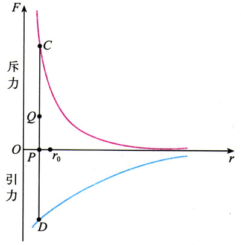

| 模块名称 | 分子动理论（基础模块） |
| 所属大主题 | 热力学 · 物理化学融合主题 |
| 预计学习时间 | 3-4 小时（按自己的节奏） |
| 前置板块 | 无（本板块是热力学大主题基础链的起点，只需要初中科学里"物质由分子构成"的基本认识；不需要预先学过其他高中物理板块） |
| 所需工具 | AI 工具、纸笔、计算器；查阿伏伽德罗常数 \(N_A = 6.02 \times 10^{23}\, /\text{mol}\) 和常见物质摩尔质量的能力（教材附录或周期表） |
烧开一杯水。宏观上你看到水温从 20°C 升到 100°C、体积略微膨胀、最后翻腾起来变蒸汽。微观上分子做了什么？
本板块的任务，是让你用 \(N_A = 6.02 \times 10^{23}\) 这个数，把宏观看得见的世界（克、升、米）和微观看不见的世界（分子、原子）真正连起来。
（提示：先承认"看不见≠不存在"。物理学有一套"间接看见"的方法 —— 让看得见的现象告诉我们看不见的事。）
不查资料，先估一估 ——
1890 年代，瑞利和其他物理学家想了一个聪明办法：
油膜法是直接测分子大小。还有一种反推方法：
回头看油膜法 + 阿伏伽德罗链式两种方法，问自己：
1827 年，植物学家布朗用显微镜看悬浮在水里的花粉颗粒，意外发现：
另一个常见现象：扩散 ——
问自己：
分子太小（\(\sim 10^{-10}\) m），即使最好的光学显微镜（分辨极限 \(\sim 10^{-7}\) m）也看不见分子本身。但物理学有一套"间接看见"的方法：
核心论证链：
这是间接观察的典范：我们看不到水分子本身，但看到了它们留下的痕迹（花粉的折线轨迹）。
把布朗运动实验放在热水里再做一次：花粉颗粒移动更剧烈，折线段更长、折点更频繁。
把墨水滴入热水 vs 冷水：热水里染色更快。
"分子永不停止运动"还有一个名字 —— 分子热运动。"热"这个字提示了它和温度的密切关系。
问自己 ——
给一个核心猜测：分子之间同时存在引力和斥力，二者随距离变化方式不同。
实验和理论都表明，分子间作用力 \(F\) 是距离 \(r\) 的函数，呈现以下规律：

关键读图：
| 状态 | 分子间距 | 主导作用力 | 宏观表现 |
|---|---|---|---|
| 固体 | \(r \approx r_0\) | 引斥力都强（互相平衡） | 有固定形状 + 固定体积 / 难压缩、难拉断 / 分子在 \(r_0\) 附近振动 |
| 液体 | 略大于 \(r_0\) | 引力大于斥力（弱） | 有固定体积、无固定形状 / 能流动 / 表面张力（引力把表面分子拉回） |
| 气体 | \(\gg r_0\)（约 10\(r_0\)） | 引斥力几乎可忽略 | 充满容器（无固定形状 / 体积）/ 易压缩、易膨胀 / 高速无序运动 |
三个挑战题，凭直觉答 ——
大量实验和理论一致表明，热力学温度（开尔文 T，K）有一个深刻的微观本质：
这个论断的几个直接推论：
读图小结：温度反映的不是"所有分子速度都相同"，而是"分子速度的分布"。同一温度下，少数分子速度极快、少数极慢、大多数在平均值附近 —— 但整个分布的"平均量"由温度唯一决定。
三个问题先自己答 ——
把 Card 2-4 建立的微观图像合起来 —— 系统的内能 U 是所有分子运动和相互作用能量的总和：
因为 \(U\) 只依赖系统当前状态（N、T、V、三态等），不依赖路径，所以可以定义状态变化时的内能变化：
这个 \(\Delta U\) 就是下一板块（热力学第一定律）要追问的关键量 ——
本板块到这里就结束了。微观工具（分子、热运动、F-r 曲线、平均动能、内能定义）全部就位。下一板块用这套工具立第一定律。
| 手写推导稿 | A4 纸手写完成 3 件事：(1) Card 1 思考点 1 + 思考点 3：油膜法 \(d = V/S\) 推导 + 阿伏伽德罗链式 \(d = \sqrt[3]{6M/(\pi\rho N_A)}\) 完整推导；(2) Card 4 思考点 7：从"同 T 下 \(\bar{\varepsilon}\) 相同"推出 \(v_\text{H}/v_\text{O} = \sqrt{m_\text{O}/m_\text{H}} = 4\) 的完整代数；(3) Card 5：用 F-r 曲线 + 三态结构解释 \(U_\text{气} \gt U_\text{液} \gt U_\text{固}\)。 |
| 学习反思日志 | 200-300 字。回答：① "看不见≠不存在"在物理学中是什么样的思维？我以前是怎么看待"看不见的东西"的？② 阿伏伽德罗常数把宏观可测和微观看不见连起来 —— 这种"数把两个世界对接起来"的体验，对我学物理有什么启发？ |
| 自评清单 | 所有 5 张卡的 checkpoint 都勾完。重点确认 Card 1（阿伏伽德罗链式）和 Card 5（内能定义）—— 这两条是后续板块的强依赖。 |
| 深度口试预约 | 与学科导师约 15 分钟口试，准备用3 分钟清晰说出"温度的微观本质是什么 + 为什么单个分子谈不上温度"。 |